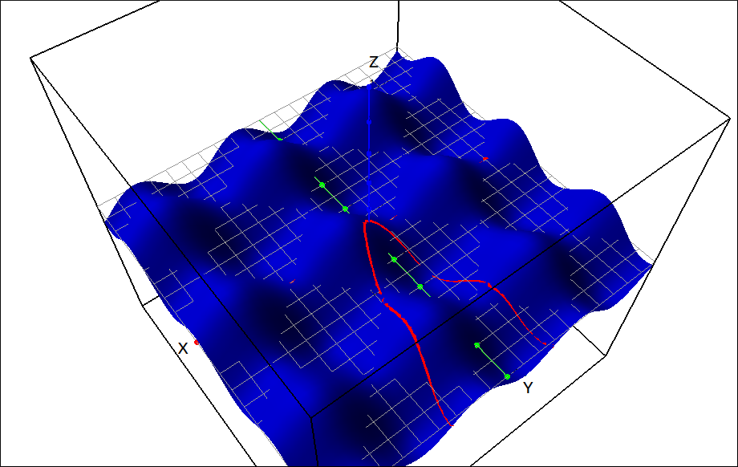
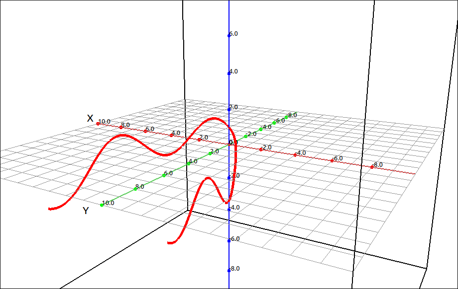
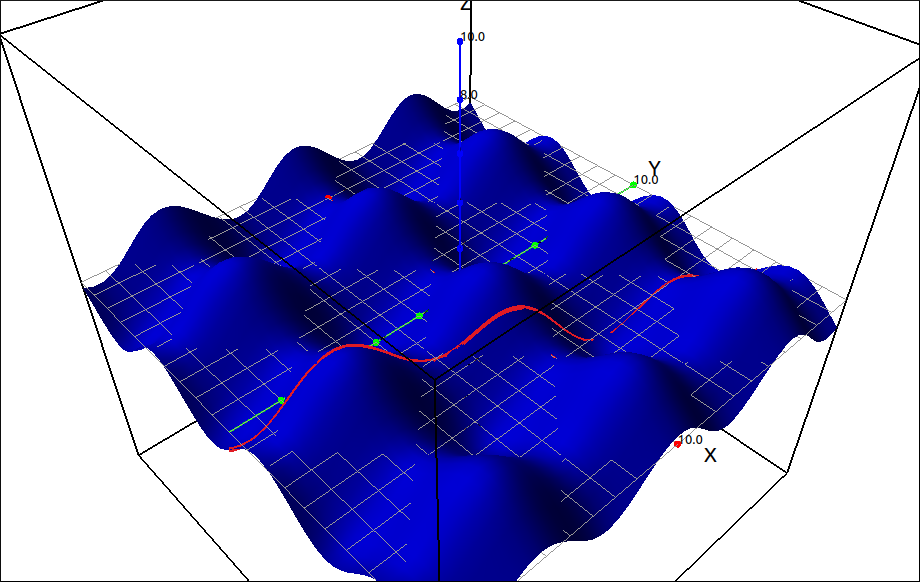
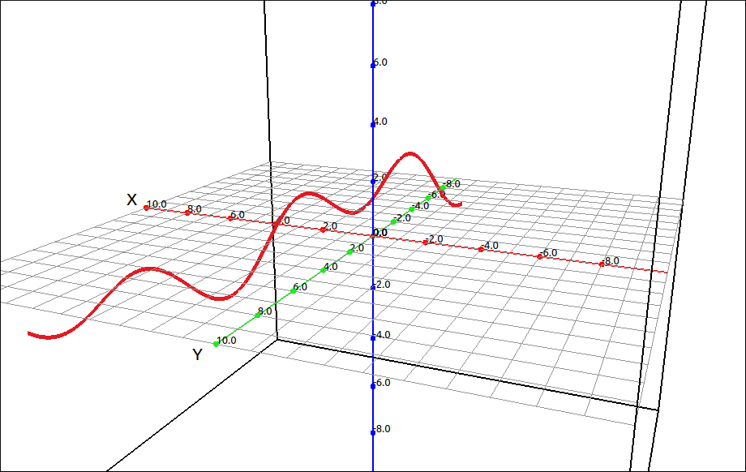
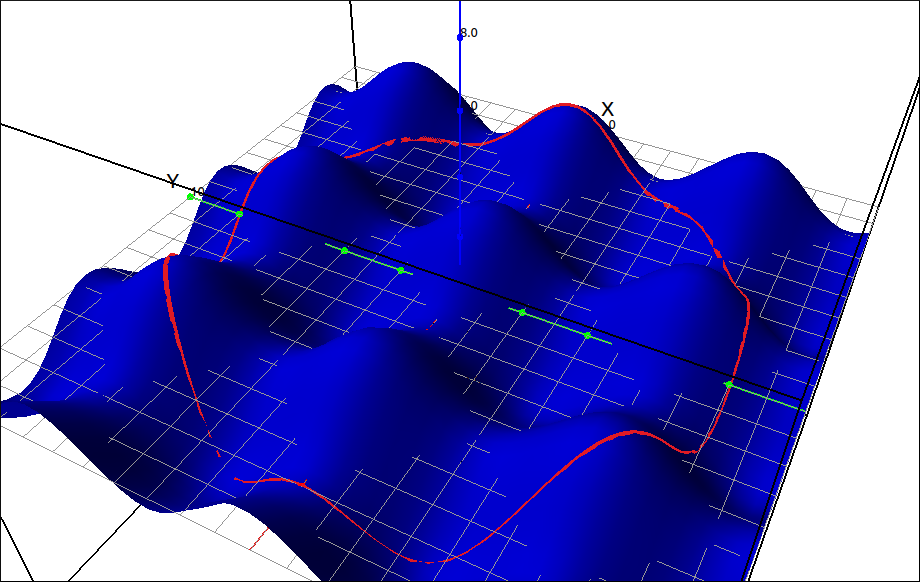
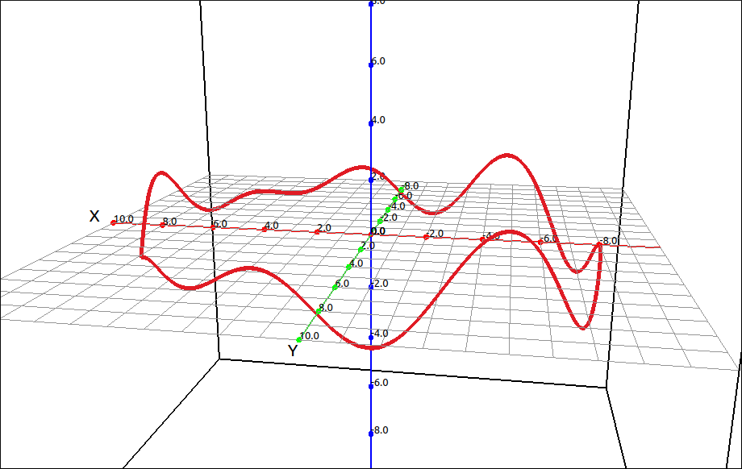
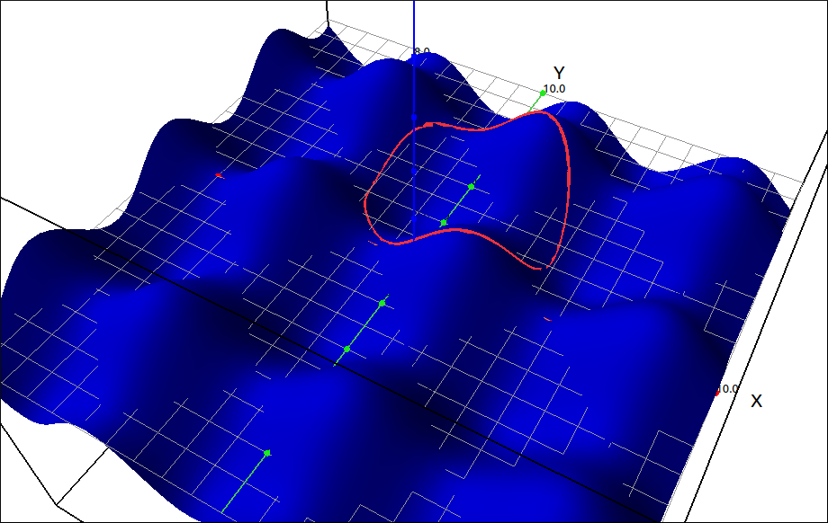
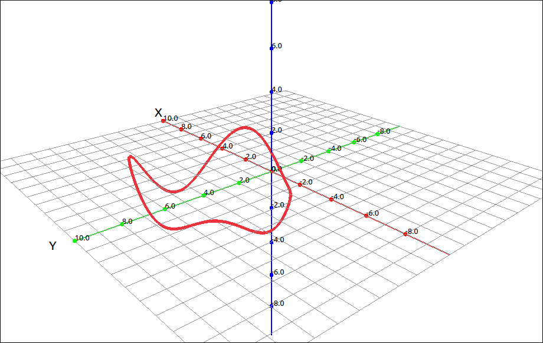
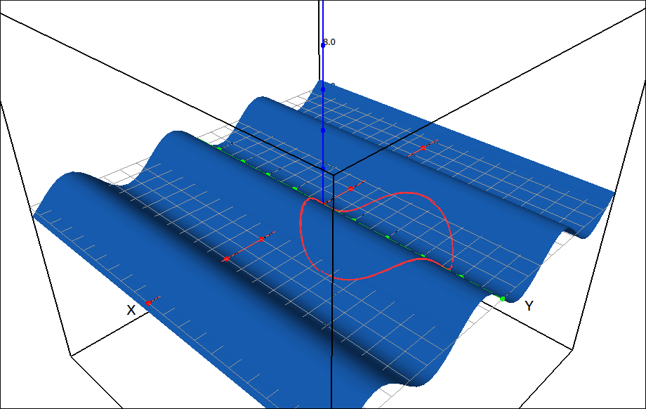
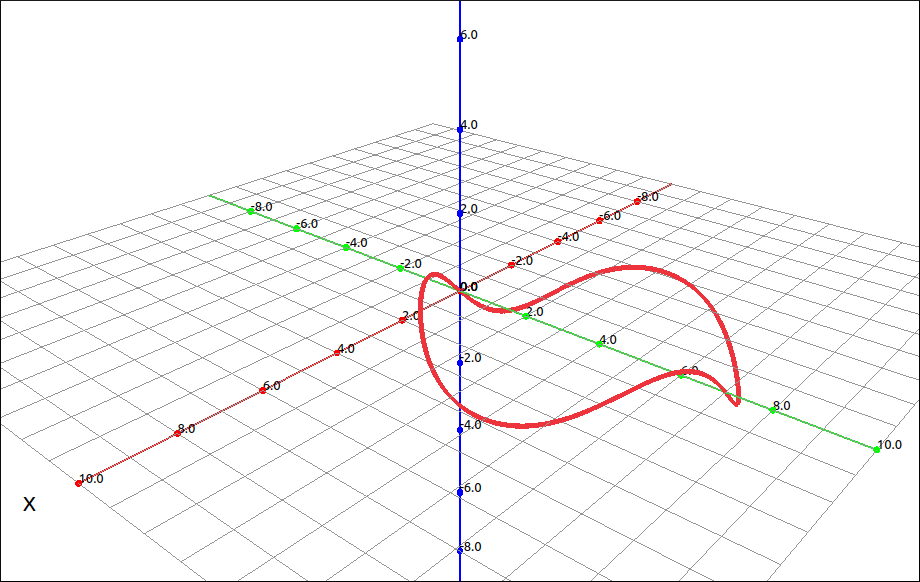

Space Curves#
Options for space curves are the calculation of unit tangent, normal, and binormal vectors as well as curvature, torsion, and curve to surface projection calculations.
Unit Tangent#
This returns the unit tangent vector of a space curve. When you select this option a dialog will open asking the user to input the variable to use. There is also a variable assumptions selection at the bottom. For more about variable assumptions see the discussion at the bottom of this page. In most cases you will leave the assumptions alone (everything real) but sometimes you may need to change these.
This option works for vectors in both 2 and 3 dimensions.
For example, say we wanted the unit tangent vector for \(\left[ t^{2}, \ t^{3}\right]\), selecting this option would return,
As another example, say we wanted the unit tangent vector for the twisted cubic \(\left[t, t^{2}, \ t^{3}\right]\), selecting this option would return,
Note that the output is as a column vector.
Unit Normal#
This returns the unit normal vector of a space curve. When you select this option a dialog will open asking the user to input the variable to use. There is also a variable assumptions selection at the bottom. For more about variable assumptions see the discussion at the bottom of this page. In most cases you will leave the assumptions alone (everything real) but sometimes you may need to change these.
This option works for vectors in both 2 and 3 dimensions.
For example, say we wanted the unit normal vector for \(\left[ t^{2}, \ t^{3}\right]\), selecting this option would return,
which simplifies to
As another example, say we wanted the unit normal vector for the twisted cubic \(\left[t, t^{2}, \ t^{3}\right]\), selecting this option would return,
which simplifies to
Note that the output is as a column vector.
Unit Binormal#
This returns the unit binormal vector of a space curve. When you select this option a dialog will open asking the user to input the variable to use. There is also a variable assumptions selection at the bottom. For more about variable assumptions see the discussion at the bottom of this page. In most cases you will leave the assumptions alone (everything real) but sometimes you may need to change these.
This option only works for vectors in 3 dimensions. Since the binormal vector is the cross product of the tangent and normal vectors it does not make sense in a 2-dimensional setting.
For example, say we wanted the unit binormal vector for the twisted cubic \(\left[t, t^{2}, \ t^{3}\right]\), selecting this option would return,
which simplifies to
TNB#
This returns the unit tangent, normal, and binormal vectors of a space curve as a list of three vectors. Since this includes the binormal vector this option only works with 3-dimensional vectors. When you select this option a dialog will open asking the user to input the variable to use. There is also a variable assumptions selection at the bottom. For more about variable assumptions see the discussion at the bottom of this page. In most cases you will leave the assumptions alone (everything real) but sometimes you may need to change these.
As a simpler example than the ones above, lets find the TNB frame for the helix, \([\cos(t), \sin(t), t]\). Selecting this option gives us the result,
which simplifies to
Curvature#
This returns the curvature of a space curve or a function. When you select this option a dialog will open asking the user to input the variable to use. There is also a variable assumptions selection at the bottom. For more about variable assumptions see the discussion at the bottom of this page. In most cases you will leave the assumptions alone (everything real) but sometimes you may need to change these.
This option works for vectors in both 2 and 3 dimensions as well as functions in the plane.
For example, say we wanted the curvature for \(\left[ t^{2}, \ t^{3}\right]\), selecting this option would return,
which simplifies to
Say we wanted the curvature for the twisted cubic \(\left[t, t^{2}, \ t^{3}\right]\) is,
which simplifies to
Say we wanted the curvature for the helix, \([\cos(t), \sin(t), t]\). Selecting this option gives us the result,
which simplifies to 1/2.
If simply want the curvature of the function \(f(x) = x^2\), this would return,
Torsion#
This returns the torsion of a space curve. Since this includes the binormal vector (or cross products of derivatives of the curve) this option only works with 3-dimensional vectors. When you select this option a dialog will open asking the user to input the variable to use. There is also a variable assumptions selection at the bottom. For more about variable assumptions see the discussion at the bottom of this page. In most cases you will leave the assumptions alone (everything real) but sometimes you may need to change these.
For example, the torsion of the helix, \([\cos(t), \sin(t), t]\) is 1/2.
The program can calculate more complected expressions, for example, we did the torsion of the twisted cubic. The result was very large (over 4000 columns wide) and we will not include it here.
Curve Projections onto a Surface#
These options are for projecting a 2D curve onto a 3D function surface \(z = f(x, y)\) and returning the space curve parametrization of the projection. Since the CAS and graphical systems are independent of each other, this operation is purely algebraic. It will take an expression in two variables, an x expression, a y expression, do a substitution and return a column vector of the parametrization. Creating space curve projections is simple enough to do, these options just convenience options to save the user a few steps. Projecting a curve onto a surface can have many visualization uses, limit paths, directional derivatives, and multiple integrals to name a few.
Project Function to Surface#
This option will project a 2D function of the form \(y = f(x)\) onto a 3D functional surface of the form \(z = f(x, y)\). When this option is invoked a dialog box will appear asking the user for the variables of the 3D function to substitute, the independent variable to use the for the space curve parametrization, and the 2D functional expression for the curve. The program will use the independent variable for the first variable in the variable list given for the 3D function, and the 2D functional expression for the second variable in the variable list given for the 3D function. This is all combined into a vector parametrization of the space curve.
For example, say our surface is \(\sin{\left(x \right)} + \cos{\left(y \right)}\) and we want to project the curve \(y = x^2\) onto the surface. When we select this option the program will automatically see that there are two variables in the 3D surface expression and put those in automatically into the variable list. For the independent variable we will use t (any variable could be used here but if we are going to graph the space curve the program will expect the independent variable to be t). For the function we will use t^2. Once all this is in we click OK and the result is the curve (in matrix form),
If we plot the surface and the curve we get the following image,

Function Projection to Surface#
Removing the surface to get a better look at the curve shows,

Function Projection to Surface, Surface Removed#
Project Point/Direction Line to Surface#
This option will project a 2D line defined by a point on the line and a 2D direction vector onto a 3D functional surface of the form \(z = f(x, y)\). When this option is invoked a dialog box will appear asking the user for the variables of the 3D function to substitute, the independent variable to use the for the space curve parametrization, the 2D point on the line, and the direction vector of the line. The program will write the line equation parametrically, use the x coordinate for the first variable in the variable list given for the 3D function, and the second coordinate for the second variable in the variable list given for the 3D function. This is all combined into a vector parametrization of the space curve.
For example, say our surface is \(\sin{\left(x \right)} + \cos{\left(y \right)}\) and we want to project the line through \((2, -3)\) in the direction \((1, 3)\) onto the surface. When we select this option the program will automatically see that there are two variables in the 3D surface expression and put those in automatically into the variable list. For the independent variable we will use t (any variable could be used here but if we are going to graph the space curve the program will expect the independent variable to be t). For the point we input the list 2, -3 (or [2, -3]) and for the direction we input the list 1, 3 (or [1, 3]). Once all this is in we click OK and the result is the curve (in matrix form),
If we plot the surface and the curve we get the following image,

Line Projection to Surface#
Removing the surface to get a better look at the curve shows,

Line Projection to Surface, Surface Removed#
Project Parametric Curve to Surface#
This option will project a 2D line defined parametrically onto a 3D functional surface of the form \(z = f(x, y)\). When this option is invoked a dialog box will appear asking the user for the variables of the 3D function to substitute, the x coordinate function of the 2D parametrized curve, and the y coordinate function of the 2D parametrized curve. Although these functions can be in any variable you should use t if you plan to plot this curve. The program will substitute the x coordinate for the first variable in the variable list given for the 3D function, and the second coordinate for the second variable in the variable list given for the 3D function. This is all combined into a vector parametrization of the space curve.
For example, say our surface is \(\sin{\left(x \right)} + \cos{\left(y \right)}\) and we want to project the parametric line \(x = 8 \cos(t)\), \(y = 8 \sin(t)\) onto the surface. When we select this option the program will automatically see that there are two variables in the 3D surface expression and put those in automatically into the variable list. For the x coordinate we will use 8*cos(t) and for the y coordinate we will use 8*sin(t). Once all this is in we click OK and the result is the curve (in matrix form),
If we plot the surface and the curve we get the following image,

Parametric Curve Projection to Surface#
Removing the surface to get a better look at the curve shows,

Parametric Curve Projection to Surface, Surface Removed#
Project Polar Curve to Surface#
This option will project a 2D line defined in polar coordinates onto a 3D functional surface of the form \(z = f(x, y)\). When this option is invoked a dialog box will appear asking the user for the variables of the 3D function to substitute, the independent variable to use for the space curve parametrization and polar coordinate function \(r = f(t) = f(\theta)\). Although these can be in any variable you should use t if you plan to plot this curve. The program will first parameterize the curve in rectangular coordinates, substitute the x coordinate for the first variable in the variable list given for the 3D function, and the second coordinate for the second variable in the variable list given for the 3D function. This is all combined into a vector parametrization of the space curve. Note that the parametrization will be in rectangular coordinates.
For example, say our surface is \(\sin{\left(x \right)} + \cos{\left(y \right)}\) and we want to project the polar coordinate function \(r = 7 \sin(t) = 7 \sin(\theta)\) onto the surface. When we select this option the program will automatically see that there are two variables in the 3D surface expression and put those in automatically into the variable list. For the variable we will use t and for the function we input 7*sin(t). Once all this is in we click OK and the result is the curve (in rectangular and matrix form),
If we plot the surface and the curve we get the following image,

Polar Curve Projection to Surface#
Removing the surface to get a better look at the curve shows,

Polar Curve Projection to Surface, Surface Removed#
Note
If the 3D surface does not contain exactly 2 variables they will not be automatically populated into the variable list in the dialog box. If there are more than three variables simply input them in (independent and dependent) order with a comma between them. If there are fewer than 2 variables then you will need to input a dummy variable to fill in one or both of the substitution slots. For example, say our surface was \(z = \sin(x)\) and we want to project the polar coordinate function \(r = 7 \sin(t) = 7 \sin(\theta)\) onto the surface. When we select the polar projection option the program will see only one variable in the expression and leave the variables box empty. For the variables we will input x, y (or [x, y]), here y is our dummy variable. For the variable we will use t and for the function we input 7*sin(t). Once all this is in we click OK and the result is the curve (in rectangular and matrix form),
If we plot the surface and the curve we get the following image,

Projection to Surface Sheet#
Removing the surface to get a better look at the curve shows,

Projection to Surface Sheet, Surface Removed#
Variable Assumptions#
Assumptions#
Assumptions about variables are essentially what type of number does the variable represent. In most cases in an introductory Calculus sequence you simply assume that all variables represent real numbers, and sometimes complex numbers. The default setting for variables is as a real number except for solving equations where we use complex numbers.
As a classic example, say we input sqrt(x^2) into the CAS, the entry would be displayed as,
If we select Algebra > Simplify, a simplification that makes no assumptions about the variables, the result is still,
But if we use Algebra > Special Simplifications, leave the settings as is, and click OK the result is,
The difference is that the default domain for x in the Special Simplifications dialog was a real number. In the real number system, \(\sqrt{x^{2}} = \left|{x}\right|\) but in the complex number system it is not. For example, \(\sqrt{i^{2}} = -1 \neq \left|{i}\right| = 1\).
Another classic example is in the study of l’Hospital’s Rule. Marquis de l’Hospital published the very first Calculus textbook in 1696, where l’Hospital’s Rule is first seen in print. l’Hospital did not discover this rule, the Swiss mathematician John Bernoulli (1667–1748) is the one who discovered the method. l’Hospital and Bernoulli had an interesting business relationship where l’Hospital purchased the rights to this method, which is why it is named after him and not Bernoulli. In his book l’Hospital wanted to calculate,
which is a \(\frac{0}{0}\) indeterminate form and hence can be attacked using l’Hospital’s Rule. This expression also assumed that \(a > 0\).
If we put this expression into our CAS (-a*(a^2*x)^(1/3) + sqrt(2*a^3*x - x^4))/(a - (a*x^3)^(1/4)), then select Calculus > Limit, when the limit dialog comes up input x for the variable and a for the limit point, and click OK. The result will be,
It should be fairly obvious that this does not work for a being a positive real number since the denominator is clearly 0 in this case. This time when we select Calculus > Limit we will change the data type of a to be a positive real, and leave x alone. This time the result is the correct answer for these assumptions of,
In the vast majority of cases you will not need to do anything with variable assumptions. The reason we incorporated the ability to specify assumptions about the variable data type is that in a few instances (like in the above examples) you may need to tell the program that variable belongs to a more restrictive domain.
Assumptions User Interface#
The variable assumptions user interface will look like one of the two following layouts.

Variable Properties User Interface#
or

Variable Properties Editor User Interface#
If it is the first of these then clicking the Edit Variable Properties button will open a dialog box with the second interface. The second is where the changes are made. In either of these each variable in the expression is listed with the data type we are assuming it belongs. In the second interface you can edit the domain by first selecting the variable from the list and then selecting its type by clicking on it.
The reason we included the first interface was that it was less intimidating and easier to accept as is,which is what the user will do in most cases. As noted above these assumptions do not need to be changed very often.